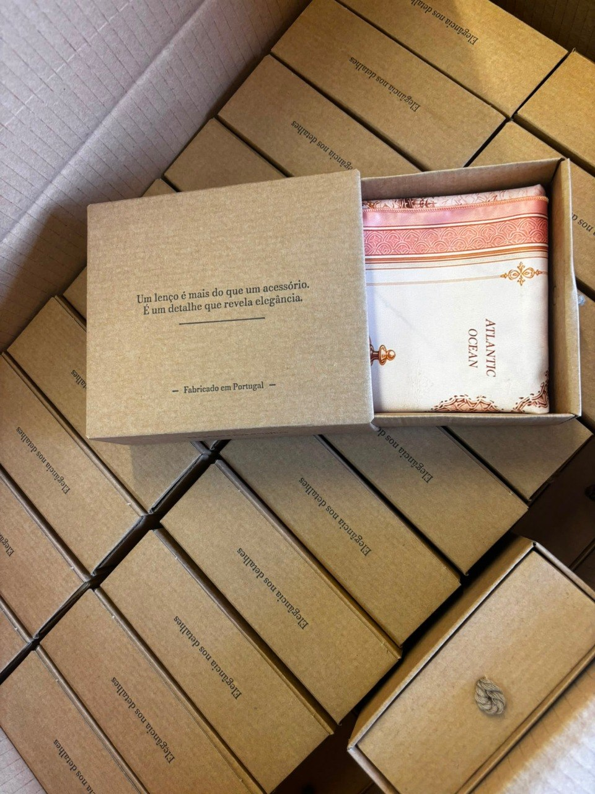

Samples
Technical interpretation, patterns, cutting, sewing and fitting.
Made in Portugal · Since 2017
Nous développons échantillons, prototypes, collections et production spécialisée au Portugal, avec rigueur technique, attention au détail et finitions haut de gamme.

Atelier
Traços Fidalgos est un atelier portugais de confection premium et haute couture fondé en 2017, basé à Perafita, Matosinhos. Nous accompagnons marques et clients recherchant développement soigné, flexibilité et production européenne fiable.
Rua 9 de Julho 1277, 4455-508 Perafita · Matosinhos · Portugal
Services
Samples, prototypes, capsule collections, private label, small/medium series and special garments.
Technical interpretation, patterns, cutting, sewing and fitting.
Small premium series for boutiques, designers and brands.
European production with quality control and close communication.
Scarves, dresses, blouses, tailoring, kimonos and detailed pieces.
Catalogues
Pages séparées par famille de produits pour présenter portfolio, capacité technique et direction esthétique.
Process
Contact
Envoyez références, dessins, dossiers techniques ou une description de la pièce/collection à développer.